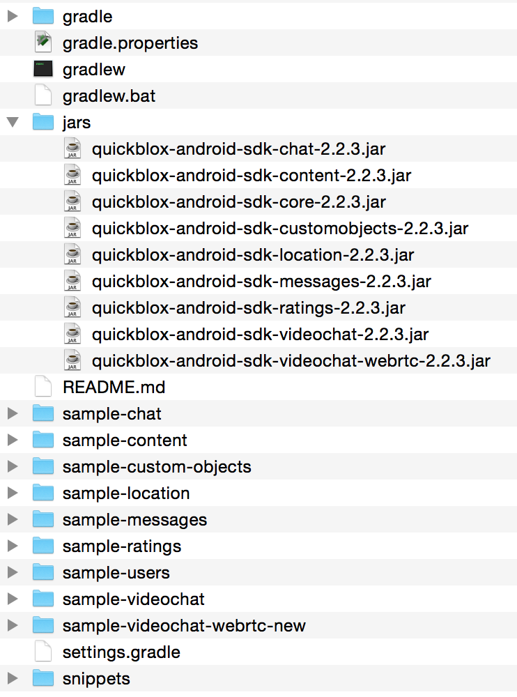

Theory¶
Quickblox is a powerful BAAS with sdk’s for many different platforms with a focus on providing easy communication, including both push notifications and chat messaging, and easy user account management. Quickblox is a commercial BAAS with a free edition maxing out at 20 messages/second and 200000 monthly users. This makes it ideal for a student project.
Quickblox creates a nice streamlined sdk for android that hides away a lot of the complexity of the underlying libraries.
An example is that quickblox uses xmpp for its chat protocol and uses the smack android xmpp library but quickblox adds a level of abstraction by hiding all smack functions and leaving a cleaner more high level api for chat messaging.
In this section i will try to explain the quickblox sdk centering around the User and Chat parts. I will cover implementation with examples and a guide on how to install the library.
The android sdk for quickblox in genereal presents you with a callback based asynchronous pack a functions. En example for what this means is that if you want to login you create a login try and a callback if login was succesfull. This relieves your own code from dealing with blocking api calls. See implementation/user for an example on this.
This section is inspired by the useful documentation provided by quickblox on their website [1]
Installation¶
You download the Quickblox android sdk from their website [1] as a zip with examples included. Below you can see how the downloaded sdk is organized:
{kind=link}
The jars directory containts all the jars of the sdk, you choose which jars to embed in your project according to which functionality you want from quickblox.
You can always take a look in the different sample projects if you are uncertain which jars are needed for a certain part of the api.
Setup example¶
You need to tell cradle to include the quickblox jars when building.
As an example i want to use the Users and Chat apis form the quickblox sdk. The User api lets you create and authenticate users as well as let users manage a user profile. The Chat api lets users chat with eachother and check if another user is online.
For this example you would need the following jars: (i replaced the version with VERSION)
- quickblox-android-sdk-core_VERSION.jar
- quickblox-android-sdk-chat-VERSION.jar
The core jar contains all the core functionality of Quickblox like for example the User api. The chat jar contains all functions related to chat messaging.
You use the following syntax in your cradle settings
dependencies {
compile files('libs/quickblox-android-sdk-core-2.1.jar')
compile files('libs/quickblox-android-sdk-chat-2.1.jar')
}
And remember to define permissions for internet access in your manifest:
<uses-permission android:name="android.permission.INTERNET" />
Implementation examples¶
User¶
To use the Users api you need to start by creating a session.
Session¶
Quickblox provides a nice createSession function that takes a callback as a parameter. Therefore you don’t have to worry about blocking the main thread!
QBAuth.createSession(new QBEntityCallbackImpl<QBSession>() {
@Override
public void onSuccess(QBSession session, Bundle params) {
/*
YEAH you created your first quickblox session!
now go and have some quickblox fun
*/
}
@Override
public void onError(List<String> errors) {
/*
Too bad, there was an error establishing contact to the api server
try look in the errors list for an explanation!
*/
}
});
The quickblox api expects you to implement some kind of state machine where the different callbacks place you in a different state. The createSession callback should lead either to a session success or connection error state.
Sign up¶
If you are in the session success state you are able to do api calls to quickblox. Lets start by creating a user:
Lets create a user with the following information:
- username = karlmarx
- password = kapital
- phone number = 11223344
final QBUser user = new QBUser("karlmarx", "kapital");
user.setPhone("11223344")
QBUsers.signUp(user, new QBEntityCallbackImpl<QBUser>() {
@Override
public void onSuccess(QBUser user, Bundle args) {
/*
YEAH! you chose a unique unused username and the api
succesfully created a new user
*/
}
@Override
public void onError(List<String> errors) {
/*
Too bad, your new account were not accepted,
there can be any number of reasons, try look in the errors list ;-)
*/
}
});
A quickblox user can have many more fields set on itself both at creation and later on. These fields include:
- facebook id
- twitter id
- tags (as a list of strings)
- website url
Sign in¶
When you have succesfully signed up you are allowed to sign in using the created user. You can sign in using a number of ways ranging from twitter/facebook tokens to using the native quickblox users api.
Continuing on our example i will describe the process of logging in with a username and a password.
QBUser user = new QBUser("karlmarx", "kapital")
QBUsers.signIn(user, new QBEntityCallbackImpl<QBUser>() {
@Override
public void onSuccess(QBUser user, Bundle params) {
/*
Yeah you succesfully logged in!
*/
}
@Override
public void onError(List<String> errors) {
/*
Too bad either your credentials were rejected or any other number of reasons
look in the errors list for forensics ;-)
*/
}
});
This concludes the section on how to establish a quickblox session, next up is sending a hello world chat message.
Chat¶
This section takes for granted that you have an authenticated session established. To begin chatting you need to establish some formalia beforehand. These formalia include the ones required by the xmpp protocol. More specifically you need to tell the xmpp protocol which frequency it will send an “im online” presence notification to keep you regarded as online. This notification is part of the xmpp protocol and is not a traditional “push notification”.
You do it like this:
if (!QBChatService.isInitialized()) {
QBChatService.init(context);
}
QBChatService.getInstance().startAutoSendPresence(60);
Here we initialize the chatservice if its not allready initialized and then start transmitting presence notifications to quickblox. If you want to handle changes in the connection you have to implement the “ConnectionListener” interface.
Chat “hello world”¶
Two ways to chat exist, 1-1 and group chat. I will describe 1-1 chat since it does not need the establishement of a group room beforehand.
To start a chat with another user you need to know the id of the user. If you don’t know the id of the user you can get it by using another known field of the user.
Here is an example of how to aqcuire the id of a user with username “karlmarx”:
QBUsers.getUserByLogin("karlmarx", new QBEntityCallbackImpl<QBUser>() {
@Override
public void onSuccess(QBUser user, Bundle args) {
int user_id_of_karl_marx = user.getId()
}
@Override
public void onError(List<String> errors) {
/*
Too bad you have not supplied right info, check errors list for explanations!
*/
}
});
When you have the id of the user, then you are able to create a chat with this user.
It works like this:
Define a QBMessageListener of type QBPrivateChat
QBMessageListener<QBPrivateChat> privateChatMessageListener = new QBMessageListener<QBPrivateChat>() {
@Override
public void processMessage(QBPrivateChat privateChat, final QBChatMessage chatMessage) {
}
@Override
public void processError(QBPrivateChat privateChat, QBChatException error, QBChatMessage originMessage){
}
@Override
public void processMessageDelivered(QBPrivateChat privateChat, String messageID){
}
@Override
public void processMessageRead(QBPrivateChat privateChat, String messageID){
}
};
Define a QBPrivateChatManagerListener
QBPrivateChatManagerListener privateChatManagerListener = new QBPrivateChatManagerListener() {
@Override
public void chatCreated(final QBPrivateChat privateChat, final boolean createdLocally) {
if(!createdLocally){
privateChat.addMessageListener(privateChatMessageListener);
}
}
};
Add the QBPrivateChatManagerListener to the QBChatService
QBChatService.getInstance().getPrivateChatManager().addPrivateChatManagerListener(privateChatManagerListener);
Create a QBChatMessage and send it
Integer opponentId = user_id_of_karl_marx;
try {
QBChatMessage chatMessage = new QBChatMessage();
chatMessage.setBody("Hello world");
privateChat = privateChatManager.createChat(opponentId, privateChatMessageListener);
privateChat.sendMessage(chatMessage);
} catch (XMPPException e) {
} catch (SmackException.NotConnectedException e) {
}
The exceptions can be quite non descriptive since they often refer to functions from inside the sdk jars.
This concludes the theory on the quickblox android sdk
Footnotes
| [1] | (1, 2) http://quickblox.com/developers/Android#Download_Android_SDK. |